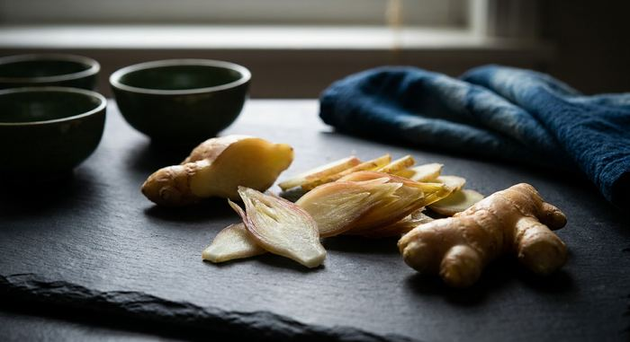

生姜ジン完全ガイド
使用銘柄30本を徹底比較

生姜は、ジンの世界では古くから使われてきたスパイス系ボタニカルです。日本のクラフトジンでも生姜を使う銘柄があり、「和のスパイス」として山椒とは別の方向から辛味と温かみを与えます。
本ページの銘柄は、Gin-DB掲載の全銘柄から公式情報で生姜の使用が確認できたもののみを抽出しています。最終更新：2026-08-29
生姜のジンを買う
このページの掲載銘柄のうち、国際コンテストの受賞歴があり、公式希望小売価格が確認できているものだけを載せています。編集部の主観による順位づけはしていません。掲載外の銘柄も、各銘柄ページから購入先を開けます。
THE HERBALIST YASO GIN EXTRA HERB
越後薬草蒸留所（新潟県）／ 45% ／ 700ml ／ ¥6,380（税込・公式）
PR ／ アフィリエイトリンクを含みます。
1. 生姜がジンにもたらすもの
生姜の辛味成分はジンゲロールで、加熱するとショウガオールに変化します。生のままだと爽快でシャープな辛味、加熱・乾燥させると丸みのある温かい辛味になるため、造り手は生姜をどの状態で仕込むかで仕上がりを大きく変えられます。
山椒が「痺れ」、胡椒が「鋭い辛さ」を担当するのに対し、生姜は喉の奥に残る温かさを担当します。そのため冬向けのホットカクテルや、体を温める飲み方と相性が良い方向に働きます。
2. 国産生姜の産地
日本の生姜生産は高知県が全国最大の産地として知られ、次いで熊本県・千葉県などが続きます。クラフトジンでは、MAKINO GIN（司牡丹酒造・高知県）が公式サイトで「高知県産の有機グアバや果皮、ブシュカン、ショウガ、ハーブなど」とボタニカルを紹介しています。
また、新生姜（収穫後すぐの柔らかいもの）とひね生姜（貯蔵して辛味が強くなったもの）でも香味が変わります。どちらを使っているかを公表している例は多くありません。
3. 生姜ジンの飲み方
ジンジャーエール割りは生姜同士を重ねる組み合わせで、辛味の輪郭がはっきり出ます。生姜の主張が強い銘柄では、甘みの少ないドライなジンジャーエールを選ぶとバランスが取りやすくなります。
ホットジントディ（お湯・はちみつ・レモンと合わせる）は、生姜の温かい辛味が最も活きる飲み方です。冬向けの定番として覚えておくと便利です。
料理では、生姜焼き・唐揚げ・餃子など、生姜を使った料理とそのまま合わせると素材が呼応します。
4. 生姜を使用しているクラフトジン 30銘柄
Gin-DB掲載の全銘柄から、公式情報で生姜の使用が確認できたもののみを抽出しています。度数・容量・価格は各蒸溜所の公式情報に基づき、確認できないものは「未確認」と表示しています。
生姜を使ったジンを数字で見る
地域の分布
アルコール度数の分布
度数を公式で確認できた29銘柄（30銘柄中）で数えています。
1. クラフトジン 伊勢神（ISE GIN）
伊勢萬（三重県伊勢市）
47% ／ 700ml ／ ¥4,850（税込・公式EC）
2. SiCX KYOTO LEMON CITRIC ACID GIN
SiCX京都東山蒸溜所（京都府京都市東山区）
45% ／ 500ml ／ ¥3,980（税抜・公式）
3. 季の美 京都ドライジン
京都蒸溜所（京都府亀岡市（2025年10月に新設した生産拠点。創業地は京都市南区））
45.7% ／ 700ml ／ オープン価格
4. 京和漢 DRY GIN FOREST OF KYOTO
森の京都蒸溜所（京都府福知山市）
45% ／ 700ml ／ ¥5,500（税込・公式）
IWSC 2025 金賞、SFWSC 2025 金賞
5. JAPANESE CRAFT GIN 熊野
紀州熊野蒸溜所（和歌山県西牟婁郡）
53% ／ 500ml ／ ¥5,500（税込・公式）
6. 翠（SUI）
サントリー大阪工場（大阪府大阪市港区）
40% ／ 700ml ／ ¥1,380（税抜・公式希望小売価格）
7. 油津吟（YUZU GIN）
京屋酒造（宮崎県日南市）
47% ／ 750ml ／ ¥5,500（税込・公式）
Mondo Selection 2018 最高金賞、TWSC 2019 金賞・ベストジャパニーズクラフトジン、TWSC殿堂入り
8. OSUZU GIN（オリジナル）
尾鈴山蒸留所（宮崎県児湯郡木城町）
45% ／ 700ml ／ ¥4,050（税抜・公式）
9. OSUZU GIN Kumquat（金柑）
尾鈴山蒸留所（宮崎県児湯郡木城町）
45% ／ 700ml ／ ¥4,050（税抜・公式）
10. クラフトジン岡山
岡山蒸溜所(宮下酒造)（岡山県岡山市中区）
50% ／ 700ml ／ ¥7,700（税込・公式）
11. SAKURAO GIN ORIGINAL
サクラオB&D（広島県廿日市市）
47% ／ 700ml ／ ¥2,000（税別・公式参考小売価格）
12. 愛知クラフトジン キヨス
清洲桜醸造（愛知県清須市）
40% ／ 500ml ／ 公式オンラインで要確認
IWSC 2020 金賞95点、TWSC 2023 洋酒部門 銀賞
13. THE HERBALIST YASO GIN EXTRA HERB
越後薬草蒸留所（新潟県上越市）
45% ／ 700ml ／ ¥6,380（税込・公式）
14. Blue Rabbit Tokyo Dry Gin
Blue Rabbit Distillery（東京都大田区田園調布）
43% ／ 700ml ／ ¥5,950（税込・正規流通）
15. LAST ELYSIUM
東京リバーサイド蒸溜所（東京都台東区）
42% ／ 700ml ／ ¥3,850（税込・公式）
IWSC 2024 Gold
16. LAST EN -縁-
東京リバーサイド蒸溜所（東京都台東区）
41% ／ 700ml ／ ¥3,850（700ml・公式EC）
17. TOKYO SPICE GIN
東京八王子蒸溜所（東京都八王子市）
41% ／ 700ml ／ ¥5,775（税込・公式EC）
18. ネイビーストレングス クラフトジン
石川酒造場（沖縄県中頭郡西原町）
57% ／ 500ml ／ ¥3,930（税込・公式直営）
TWSC 2021 金賞
19. ジンジャー クラフトジン
石川酒造場（沖縄県中頭郡西原町）
45% ／ 500ml ／ ¥2,580（税込・公式直営）
TWSC 2021 銀賞
20. Freeee!!! - ASAKURA CRAFT GIN
朝倉蒸溜所(篠崎)（福岡県朝倉市）
500ml ／ 未確認
売切表示
21. クラフトジン歌川 生姜
美峰酒類（群馬県高崎市）
40% ／ 500ml ／ ¥1,655（税込・希望小売価格・公式）
22. 香の森（KANOMORI）
養命酒製造 駒ヶ根工場（長野県駒ヶ根市）
47% ／ 700ml ／ ¥5,192（税込・公式希望小売）
2026-09-20時点で養命酒の公式サイトの商品一覧に掲載が無い（終売の告知は未確認）
23. Water Dragon Spirits（ウォータードラゴンスピリッツ）
Distillery Water Dragon（静岡県三島市）
47% ／ 700ml ／ ¥3,333（税込・公式）
蒸溜所公式の受賞歴：2025年 IWSC Bronze、TWSC Bronze、World Gin Awards Silver、Feminalise Gold／2024年 SFWSC Double Gold、SWSC Double Gold・Best of Class、IWSC Silver、HKIWSC Silver、Gin Masters Master、TWSC Bronze（部門名は公式に記載なし）
24. On Spring（オンスプリング）
Distillery Water Dragon（静岡県三島市）
43% ／ 375ml ／ ¥3,740（税込・公式）
蒸溜所公式の受賞歴：2025年 IWSC Gold、TWSC Bronze、Feminalise Silver／2024年 IWSC Gold、HKIWSC Gold、ISC Silver、SFWSC Silver、SWSC Silver、Gin Masters Master（部門名は公式に記載なし）。※TWSC2023にもOn Springの出品記録があり、蒸溜所のジン第1弾（2023年10月）より前の版は当蒸溜所製造か未確認
25. LAZY MASTER ~Lushly Green~
沼津蒸留所（静岡県沼津市）
42% ／ 500ml ／ ¥4,610（公式サイト掲載価格・税込/税別の表記なし）
26. LAZY MASTER ~Smoky Gold~
沼津蒸留所（静岡県沼津市）
42% ／ 500ml ／ 市場実勢 約¥4,500
27. 夕凪GIN（JAPANESE CRAFT GIN）
西野金陵（香川県仲多度郡琴平町）
40% ／ 500ml ／ ¥3,850（税込・公式）
28. MAKINO GIN（マキノジン）
司牡丹酒造（高知県高岡郡佐川町）
45% ／ 700ml ／ ¥3,700（税込・公式）
IWSC 2024 銀賞
29. 和美人（Japanese GIN 和美人）
マルス津貫蒸溜所(本坊酒造)（鹿児島県南さつま市）
47% ／ 700ml ／ ¥4,400（税込・ギフト箱付）／¥4,180（ボトルのみ）
TWSC Best of the Best 2024、ISC 2024 Double Gold、SFWSC 2024 Gold
30. 和美人 ダマスクローズ
マルス津貫蒸溜所(本坊酒造)（鹿児島県南さつま市）
45% ／ 495ml ／ ¥3,850（税込）
限定
5. 30銘柄スペック比較表
| # | 銘柄 | 所在地 | 度数 | 価格 |
|---|---|---|---|---|
| 1 | クラフトジン 伊勢神（ISE GIN） | 三重県 | 47% | ¥4,850（税込・公式EC） |
| 2 | SiCX KYOTO LEMON CITRIC ACID GIN | 京都府 | 45% | ¥3,980（税抜・公式） |
| 3 | 季の美 京都ドライジン | 京都府 | 45.7% | オープン価格 |
| 4 | 京和漢 DRY GIN FOREST OF KYOTO | 京都府 | 45% | ¥5,500（税込・公式） |
| 5 | JAPANESE CRAFT GIN 熊野 | 和歌山県 | 53% | ¥5,500（税込・公式） |
| 6 | 翠（SUI） | 大阪府 | 40% | ¥1,380（税抜・公式希望小売価格） |
| 7 | 油津吟（YUZU GIN） | 宮崎県 | 47% | ¥5,500（税込・公式） |
| 8 | OSUZU GIN（オリジナル） | 宮崎県 | 45% | ¥4,050（税抜・公式） |
| 9 | OSUZU GIN Kumquat（金柑） | 宮崎県 | 45% | ¥4,050（税抜・公式） |
| 10 | クラフトジン岡山 | 岡山県 | 50% | ¥7,700（税込・公式） |
| 11 | SAKURAO GIN ORIGINAL | 広島県 | 47% | ¥2,000（税別・公式参考小売価格） |
| 12 | 愛知クラフトジン キヨス | 愛知県 | 40% | 公式オンラインで要確認 |
| 13 | THE HERBALIST YASO GIN EXTRA HERB | 新潟県 | 45% | ¥6,380（税込・公式） |
| 14 | Blue Rabbit Tokyo Dry Gin | 東京都 | 43% | ¥5,950（税込・正規流通） |
| 15 | LAST ELYSIUM | 東京都 | 42% | ¥3,850（税込・公式） |
| 16 | LAST EN -縁- | 東京都 | 41% | ¥3,850（700ml・公式EC） |
| 17 | TOKYO SPICE GIN | 東京都 | 41% | ¥5,775（税込・公式EC） |
| 18 | ネイビーストレングス クラフトジン | 沖縄県 | 57% | ¥3,930（税込・公式直営） |
| 19 | ジンジャー クラフトジン | 沖縄県 | 45% | ¥2,580（税込・公式直営） |
| 20 | Freeee!!! - ASAKURA CRAFT GIN | 福岡県 | 未確認 | 未確認 |
| 21 | クラフトジン歌川 生姜 | 群馬県 | 40% | ¥1,655（税込・希望小売価格・公式） |
| 22 | 香の森（KANOMORI） | 長野県 | 47% | ¥5,192（税込・公式希望小売） |
| 23 | Water Dragon Spirits（ウォータードラゴンスピリッツ） | 静岡県 | 47% | ¥3,333（税込・公式） |
| 24 | On Spring（オンスプリング） | 静岡県 | 43% | ¥3,740（税込・公式） |
| 25 | LAZY MASTER ~Lushly Green~ | 静岡県 | 42% | ¥4,610（公式サイト掲載価格・税込/税別の表記なし） |
| 26 | LAZY MASTER ~Smoky Gold~ | 静岡県 | 42% | 市場実勢 約¥4,500 |
| 27 | 夕凪GIN（JAPANESE CRAFT GIN） | 香川県 | 40% | ¥3,850（税込・公式） |
| 28 | MAKINO GIN（マキノジン） | 高知県 | 45% | ¥3,700（税込・公式） |
| 29 | 和美人（Japanese GIN 和美人） | 鹿児島県 | 47% | ¥4,400（税込・ギフト箱付）／¥4,180（ボトルのみ） |
| 30 | 和美人 ダマスクローズ | 鹿児島県 | 45% | ¥3,850（税込） |
6. よくある質問（FAQ）
Q. 生姜ジンは辛いですか？
A. 銘柄によって幅があります。生姜が主役の設計では喉に温かい辛味が残りますが、多数のボタニカルのうちの一つとして使われている場合はアクセント程度です。掲載の銘柄一覧でボタニカル構成を確認してください。
Q. 山椒ジンとの違いは？
A. 山椒は舌が痺れる感覚（サンショオール由来）、生姜は喉の奥が温まる辛味（ジンゲロール由来）と、刺激の質がまったく異なります。両方を使っている銘柄もあります。